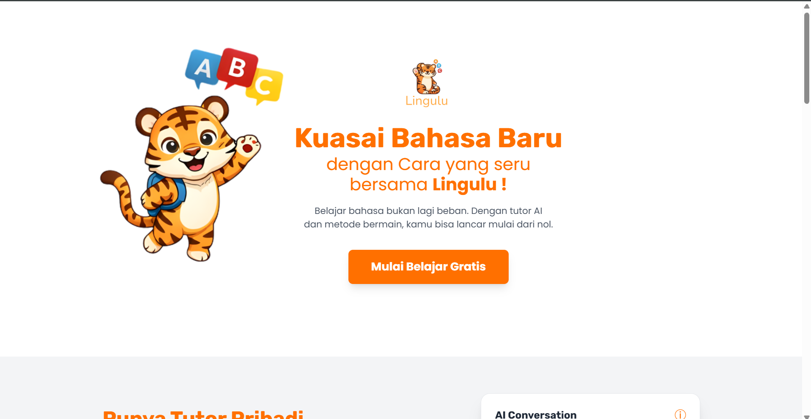
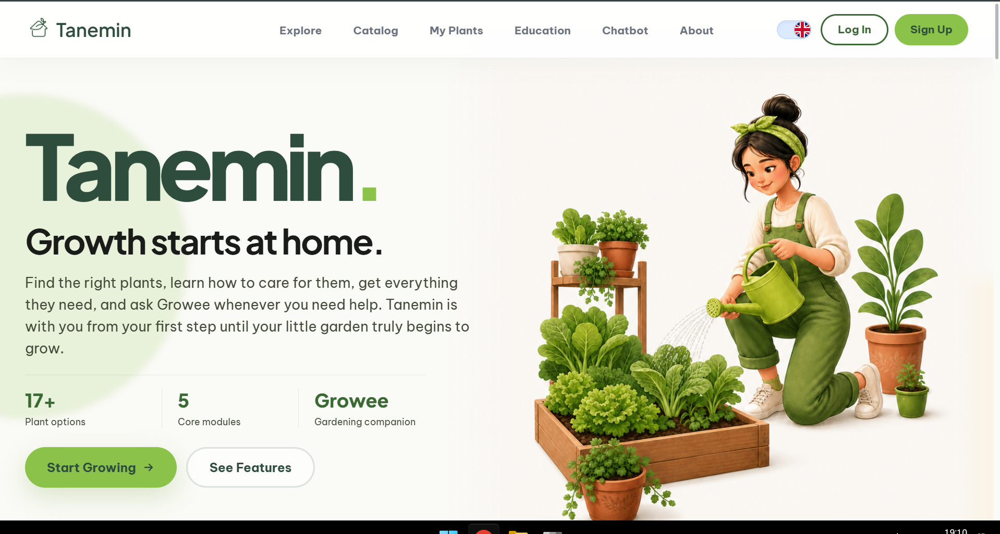

Halo, perkenalkan
Diaz, membangun
sisi backend
dari aplikasi web.
Web developer yang fokus di balik layar: merancang API, mengatur alur data, dan menyambungkan sistem supaya semuanya berjalan stabil — bukan cuma tampil bagus di depan.
// Tentang
Berbasis di Indonesia
Fokus: Backend Development
Status: Open for work
Aku Diaz, seorang web developer yang paling nyaman bekerja di sisi backend — bagian yang jarang terlihat tapi menentukan apakah sebuah aplikasi benar-benar bisa diandalkan.
Sehari-hari aku merancang REST API, mengatur struktur database, dan menyambungkan berbagai layanan agar data mengalir dengan rapi dari server ke pengguna. Spring Boot dan Laravel jadi dua tools utama yang paling sering kupakai untuk membangun fondasi itu.
Selain backend, aku juga cukup terbiasa menyentuh sisi frontend menggunakan Tailwind dan Bootstrap ketika sebuah proyek butuh dikerjakan secara full-stack.
// Skill & Tools
Yang aku pakai sehari-hari
Backend
- Spring Boot
- Java
- Laravel
Frontend
- JavaScript
- Tailwind CSS
- Bootstrap
Database
- MySQL
- PostgreSQL
- MongoDB
Tools
- GitHub
// Proyek
Beberapa hal yang sudah aku bangun

Fokus: Backend Development
Lingulu
Platform belajar Bahasa Inggris dengan tutor AI, dilengkapi model Machine Learning untuk mengecek akurasi pelafalan kalimat pengguna. Di proyek ini aku menangani sisi backend: merancang endpoint API dan menghubungkannya ke database PostgreSQL.

Fokus: Full-Stack Development
Tanemin
Platform panduan menanam tanaman lengkap dengan katalog tanaman, pelacakan tanaman pribadi, dan Growee — chatbot pendamping berkebun. Proyek ini dikerjakan secara full-stack menggunakan Laravel dari sisi server hingga tampilan.
Mari terhubung.
Terbuka untuk kolaborasi, project backend, atau sekadar diskusi soal Spring Boot dan Laravel.